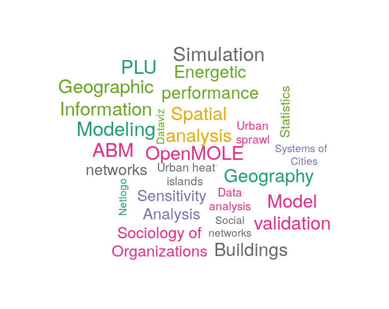
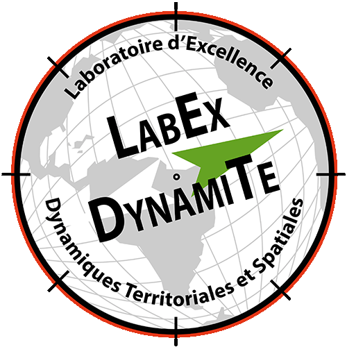

https://orcid.org/0000-0002-3054-0759
https://orcid.org/0000-0002-3054-0759LASSO
Paul Chapron
IGN
73 avenue de Paris · 94165 Saint-Mandé CEDEX
Bureau K 301
(+33)1 43 98 80 00
paul.chapron@{ign.fr,gmail.com}
73 avenue de Paris · 94165 Saint-Mandé CEDEX
Bureau K 301
(+33)1 43 98 80 00
paul.chapron@{ign.fr,gmail.com}
Computer Sciences Researcher
Simulation & Modeling of socio-spatial dynamics, Simulation model analysis
Member of the STRUDEL research team
Chargé de recherche
Modelisation et simulation socio-spatiale. Analyse de modèles de simulation.
Membre de l'équipe STRUDEL
Research Interests
Sujets de recherche

Publications
Extracted from HAL repository ⭝
Check directly on HAL, for some preprints contact me directly
Journals
Conferences
Books and Chapters
Workshops and Posters
Other Publications (Technical Reports, Dissertations)
Static List of publications ⭝
generated static list, may contain some errors
Journals
- Clémentine Cottineau, Romain Reuillon, Paul Chapron, Sébastien Rey-Coyrehourcq, and Denise Pumain. A modular modelling framework for hypotheses testing in the simulation of urbanisation. Systems, 3(4):348, 2015.
- Clémentine Cottineau, Paul Chapron, and Romain Reuillon. Growing models from the bottom up. An evaluation-based incremental modelling method (ebimm) applied to the simulation of systems of cities. Journal of Artificial Societies and Social Simulation, 18(4):9, 2015.
- Christophe Sibertin-Blanc, Pascal Roggero, Françoise Adreit, Bertrand Baldet, Paul Chapron, Joseph El-Gemayel, Matthias Mailliard, and Sandra Sandri. Soclab: A framework for the modeling, simulation and analysis of power in social organizations. Journal of Artificial Societies and Social Simulation, 16(4):8, 2013 .
- Paul Chapron. Analyse structurelle des champs de capacité d’action dans les organisations sociales. outils analytiques pour la caractérisation de la coopération. Studia Informatica Universalis, 10(1):98–128, 2012.
- Paul Chapron. Analyse de reseau de pouvoir au sein d’une organisation sociale. Nouvelles Perspectives en Sciences Sociales, 6(2):233–256, 2011.
French journal Articles
- Calvet Coralie, Vincent Delbar, Paul Chapron, and Sylvain Moulherat. Quels sont les effets des dynamiques urbaines sur les dynamiques écologiques ? Intégrer les enjeux de la séquence ERC dans la planification territoriale par la modélisation ; application à la région Occitanie. Sciences Eaux & Territoires , 2019.
- Joseph El Gemayel, Paul Chapron, Françoise Adreit, and Christophe Sibertin-Blanc. Quand et comment les acteurs sociaux peuvent-ils coopérer ? Un algorithme de simulation pour la négociation de leurs comportement. Revue d’Intelligence Artificielle, 25, 2011.
- Christophe Sibertin-Blanc, Françoise Adreit, Paul Chapron, Joseph El Gemayel, Matthias Mailliard, Pascal Roggero, and Claude Vautier. Compte-rendu d’une recherche interdisciplinaire entre sociologues et informaticiens : de la sociologie de l’action organisée au logiciel SocLab. Technique et Science Informatiques, 29(8-9):1081–1115, 2010.
Conferences
- Mathieu Leclaire, Sebastien Rey-Coyrehourcq, Béatrice Charton, Hélène Arduin, Paul Chapron, Guillaume Chérel, Etienne Delay, Benoist Gaston, François Lavallée, Jonathan Passerat-Palmbach, Pierre Peigne, Julien Perret, Juste Raimbault, and Romain Reuillon. Retour d’expérience de l’école OpenMOLE ”ExModelo”, organisée en partenariat avec le méso-centre du CRIANN. In Journées Calcul et Données 2019, Toulouse, France, October 2019.
- Romain Reuillon, Mathieu Leclaire, Juste Raimbault, Hélène Arduin, Paul Chapron, Guillaume Chérel, Etienne Delay, Pierre-François Lavallée, Jonathan Passerat-Palmbach, Pierre Peigne, Julien Perret, and Sébastien Rey-Coyrehourcq. Fostering the use of methods for geosimulation models sensitivity analysis and validation. In ECTQG 2019, Mondorf, Luxembourg, September 2019.
- Mickaël Brasebin, Paul Chapron, Guillaume Chérel, Mathieu Leclaire, Imran Lokhat, Julien Perret, and Romain Reuillon. Apports des méthodes d’exploration et de distribution appliquées à la simulation des droits à bâtir. In Spatial Analysis and GEOmatics 2017, Rouen, France, November 2017. INSA de rouen.
- Paul Chapron, Mickaël Brasebin, Julien Perret, and Romain Reuillon. Exploration de l’influence de la réglementation urbaine locale sur la morphologie des formes bâties par simulation distribuée. In 13e Rencontres de Théo Quant, Besançon, 2017. ThéMA, Université de Franche-Comté.
- Paul Chapron and Christophe Sibertin-Blanc. Analysis of the power network among the actors of a social organization (regular paper). In D. Kazakov and G. Tsoulas, editors, AISB Symposium on Social Networks and Multiagent Systems, York, 04/04/2011-07/04/2011, pages 2–7, http://www.aisb.org.uk, avril 2011. Society for the Study of Artificial Intelligence and the Simulation of Behaviour.
- Joseph El Gemayel, Christophe Sibertin-Blanc, and Paul Chapron. Impact of tenacity upon the Behaviors of Social Actors (regular paper). In Alexis Drogoul, Benoit Gaudou, and Nicolas Marilleau, editors, Applied Agent based simulator Engineering for Complex System study, Nagoya, Japan, 13/12/2009, 2009.
Books and Chapters
- Clémentine Cottineau, Paul Chapron, Marion Le Texier, and Sébastien Rey-Coyrehourcq. Modélisation territoriale incrémentale. In Denise Pumain, editor, La modélisation des villes et des territoires, Méthodologies de modélisation en sciences sociales. ISTE, 2019.
- Clémentine Cottineau, Paul Chapron, Marion Le Texier, and Sébastien Rey-Coyrehourcq. Incremental Territorial Modelling. In Geographical Modeling: Cities and territories, number 1. Wiley, January 2020.
- Chapron Paul, Chérel Guillaume, Cottineau Clémentine, Cura Robin, Leclaire Mathieu, Pumain Denise, Rey-Coyrehourcq Sébastien, Reuillon Romain, Schmitt Clara, and Swerts Elfie. Urban Dynamics and Simulation Models. Springer International Publishing, 2017.
- Françoise Adreit, Paul Chapron, Joseph El GEmayel, Pascal Roggero, Sandra Sandri, and Christophe Sibertin-Blanc. Une formalisation de la sociologie de l’action organisée : méta-modèle, simulation et étude analytique. In Denis Phan, editor, Ontologies et modélisation par SMA en SHS (informatique et systèmes d’information, rta). Hermes Science Publications, 5 , 2014.
- Joseph El Gemayel, Christophe Sibertin-Blanc, and Paul Chapron. Impact of Tenacity upon the Behaviors of Social Actors. In Quan Bai and Noaki Fukuta, editors, Advances in Practical Multi-Agent Systems, volume 325, pages 287–306. Springer, http://www.springerlink.com, 2011.
Workshops and Posters
- Milo Monnier, Paul Chapron, Hadrien Commenges, and Maxime Lenormand. Mesurer l’excess commuting à différentes échelles. Quatorzièmes Rencontres de Théo Quant, February 2019. Poster.
- Paul Chapron. Diversité des formes d’îlots urbains à partir d’un Plan Local d’Urbanisme. Journée de la recherche IGN, 23 mars 2017. http://recherche.ign.fr/jr/jr17.php, 2017.
- Paul Chapron. Analysing the dynamics of a social organization by means of its transfer function. International Conference "Interactions in Complex Systems" and "Spatial Econometrics and Statistics", 12th International Workshop June 17-19, Université d’Orléans http://www.univ-orleans.fr/mapmo/peps/?q=content/international-conference-interactions-complex-systems-and-12th-international-workshop http://www.univ-orleans.fr/mapmo/peps/sites/default/files/conferences/programme_ISC_Print.pdf, 2013.
- Clémentine Cottineau and Paul Chapron. Evaluation & calibration for the comparison of cities’ trajectories. Paper Session: 2539 Population Models 3: Applications - Macro,AAG Meeting 2014, Tampa (Florida)
- Clémentine Cottineau and Paul Chapron. Back in the USSR: a series of models for simulating urban evolution. Urban Systems Modeling: advances from GeoDiverCity and MECHANICITY ERC programmes. Satellite meeting of the European Conference on Complex Systems 2013, Barcelona (Spain), 2013.
- Clémentine Cottineau and Paul Chapron. Step-wise modeling. An Incremental method for modeling cities trajectories in the post-Soviet urban system. 18th European Colloquium in Theoretical and Quantitative Geography (ECTQG) , 2013.
- Paul Chapron and Joseph El Gemayel. Social Actors Rationality within Organizations. Simulation of Complex Social Systems, (conférence sans actes) Sevilla, Spain, 09/11/2009, 2009.
- Françoise Adreit, Paul Chapron, , Christophe Sibertin-Blanc, Pascal Roggero, and Sandra Sandri. Une ontologie des systèmes d’actions concrets. Rencontres interdisciplinaires sur les systèmes complexes naturels et artificiels - Journées de Rochebrune, Rochebrune, 19/01/09-23/01/09., 2008.
- Françoise Adreit, Paul Chapron, Pascal Roggero, and Christophe Sibertin-Blanc. Régulation des organisations et rationalité des acteurs. XVIII Congrès de l’AISLF, Istanbul (conférence sans actes), 07/07/08-11/07/08, 2008.
Other Publications (Technical Reports, Dissertations)
-
My PhD manuscript on TEL .
Resume
CV
Curriculum vitae
(Click to open/download)mis à jour le 19 novembre 2020
updated on november 19th, 2020
Projects
Past Projects and personnal stuff
LASSO (Analyse et modélisation de la Localisation et de l’Activité
des Sources SOnores dans l’espace urbains) is an I-site Future Project of Univ. Gustave Eiffel, in collaboration with Pierre Aumond [homepage] from UMRAE.
Karma Crusa
I'm in a band called Karma Crusa
we do some grunge-stoner garage rock.
Captures of our gigs can be found on bandcamp, and some videos on our Youtube Channel
Photo : copyright Saskia Lavaud
Courses and Trainings
When I am the sole author of it, materials and code are open-source and Creative Commons-ish, you can do whatever you want.
When I'm not, you should check with the other author(s), they should be ok with it too.
When I'm not, you should check with the other author(s), they should be ok with it too.
Analyse Statistique Master2 IGAST
Statistique univariée, bivariée, introduction à R, et un peu d'analyse spatiale
Geospatial data and Research : the Delhi R school
Courses material and tutorial of the Delhi-GIS-R Summer School 2019

Florence Summer School
Slides and R/Rmd source code of the Dynamic system modeling workshop, with Clémentine Cottineau